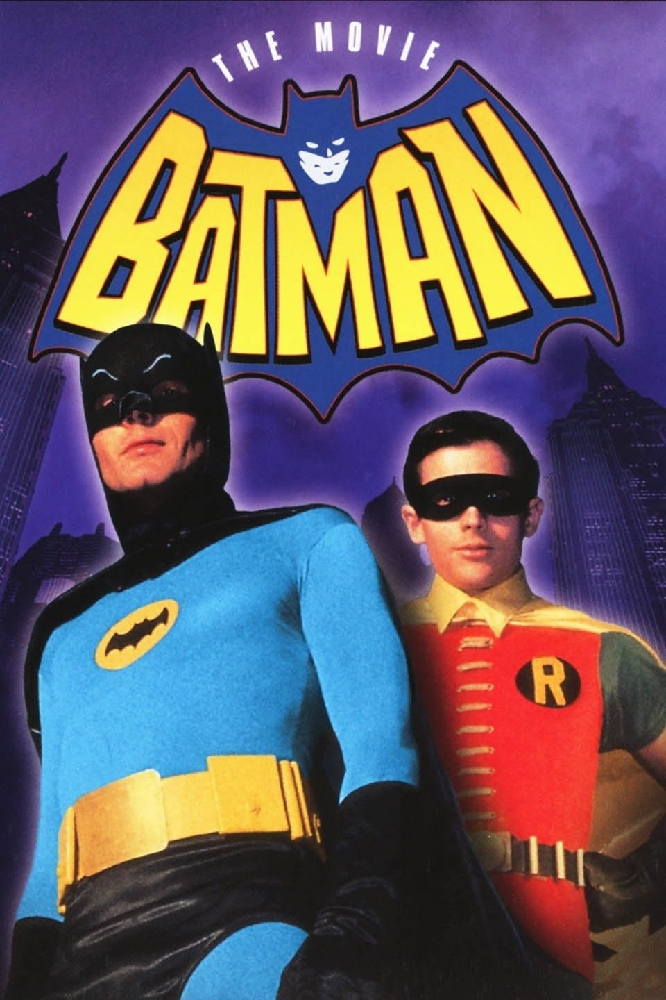

The Evolution of Batman in TV Series
The First Live Action TV Series
During the 1940s, Batman transitioned from comics to television, debuting in the 15-chapter TV series 'Batman,' featuring Lewis Wilson playing the superhero. This period also marked the introduction of significant characters in the Batman universe, such as Robin the Boy Wonder, the Joker, and Catwoman. Comic editor Whitney Ellsworth decided in this decade that Batman would not be depicted as a killer in his eponymous comic series. Additionally, Gotham City was brought to life, and the iconic Batmobile became Batman's mode of transportation.

The Live Action in 60s
During the late 1960s, a fresh 'Batman' television series emerged, starring Adam West as The Caped Crusader and Burt Ward as Robin. Their portrayals remain influential, referenced in later Batman works like 'The Lego Batman Movie,' which is filled with humor inspired by the original series. Known for its comedic tone, the show became renowned for its "pow" graphics during superhero battles against iconic villains such as the Joker, Riddler, Penguin, and Catwoman. Additionally, this era introduced the distinctive yellow chest symbol prominently displayed by Batman.
